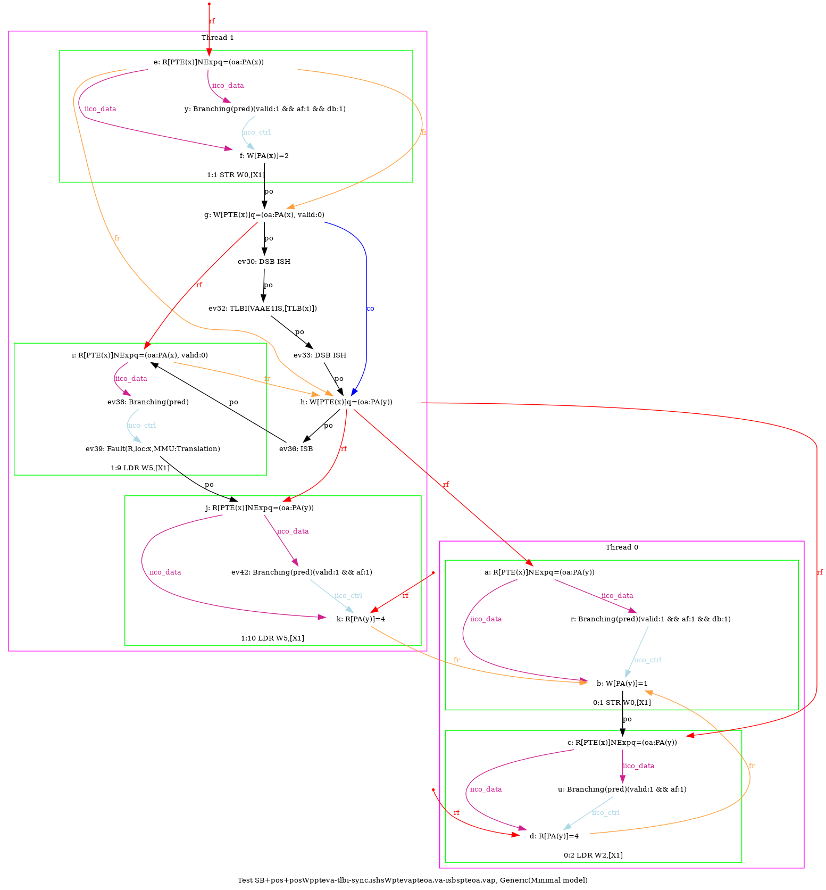

 …
AArch64 SB+pos+posWppteva-tlbi-sync.ishsWptevapteoa.va-isbspteoa.vap
"PosWR Fre PosWWPPteVA TLBI-sync.ISHsWWPteVAPteOA.VA ISBsWRPteOA.VAP Fre"
Variant=imprecise
Cycle=Fre PosWR Fre PosWWPPteVA TLBI-sync.ISHsWWPteVAPteOA.VA ISBsWRPteOA.VAP
Relax=[PteVA,TLBI-sync.ISHsWW,PteOA,PteVA,ISBsWR]
Safe=Fre PosWW PosWR
Generator=diy7 (version 7.56+02~dev)
Com=Fr Fr
Orig=PosWR Fre PosWWPPteVA TLBI-sync.ISHsWWPteVAPteOA.VA ISBsWRPteOA.VAP Fre
{ int x=0; int y=4;
0:X1=x;
1:X1=x; 1:X2=PTE(x); 1:X3=(oa:PA(x), valid:0); 1:X4=(oa:PA(y));
}
P0 | P1 ;
MOV W0,#1 | MOV W0,#2 ;
STR W0,[X1] | STR W0,[X1] ;
LDR W2,[X1] | STR X3,[X2] ;
| LSR X6,X1,#12 ;
| DSB ISH ;
| TLBI VAAE1IS,X6 ;
| DSB ISH ;
| STR X4,[X2] ;
| ISB ;
| LDR W5,[X1] ;
exists (0:X2=4 /\ 1:X5=4 /\ [x]=2 /\ fault(P1,x,MMU:Translation) /\ ~fault(P0,x))